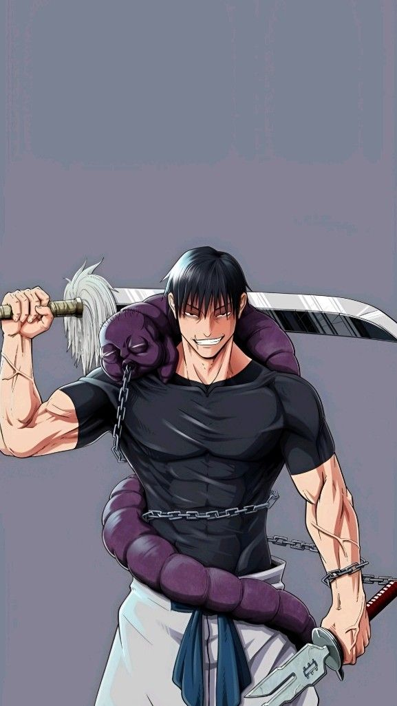
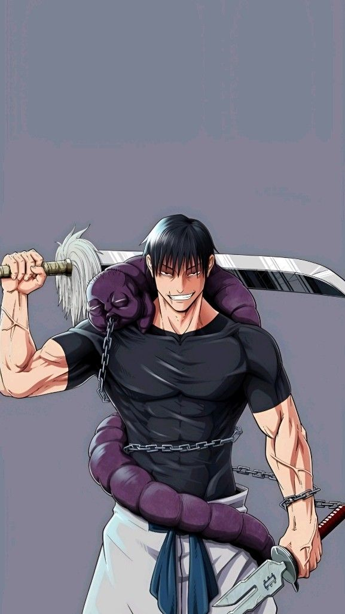

Synopsis:
Yuji Itadori, lycéen membre du club d'occultisme, découvre un monde où les sentiments négatifs des humains engendrent des malédictions mortelles. Après avoir avalé un doigt de démon pour sauver ses amis, Yuji se retrouve possédé par Ryômen Sukuna, un démon redouté. Malgré tout, Yuji conserve le contrôle de son corps. Cependant, il est condamné à mort par l'organisation des exorcistes. Sa seule chance de survie est de trouver tous les doigts de Sukuna pour éliminer la menace une fois pour toutes. Ainsi débute l'aventure de Yuji Itadori dans le monde des exorcistes, où il doit affronter les malédictions et trouver un moyen de sauver sa vie.


 
